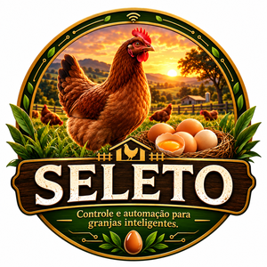

Controle e automação para granjas inteligentes
Proposta Comercial
SELETO | Gestão, sensores, câmeras e automação rural
| Cliente | |
| Propriedade | |
| Responsável | |
| Data | |
| Validade | 15 dias |
Documento editável para adaptação conforme diagnóstico, distância, quantidade de galpões, câmeras, sensores, automações e nível de suporte contratado.
Pequenas e médias granjas normalmente crescem antes de terem uma estrutura digital de controle. A rotina passa a depender de anotações em caderno, mensagens de WhatsApp, planilhas soltas e conferências manuais. Isso dificulta saber, com segurança, quanto foi produzido, quanto foi vendido, quanto de ração foi consumido, quais lotes estão performando melhor e se água, ambiente, iluminação e ventilação estão dentro do esperado.
Além disso, quando o produtor não está presente, falhas simples podem virar prejuízo: reservatório baixo, excesso de calor, ventilador desligado, iluminação fora do horário, câmera sem acesso, estoque de ração desatualizado ou falta de registro de mortalidade e coleta.
| GestãoProdução, estoque, lotes, alimentação, vendas e financeiro em uma rotina organizada. | MonitoramentoCâmeras, sensores e alertas para acompanhar pontos críticos mesmo fora da propriedade. | AutomaçãoControle de luz, ventilação e acionamentos por ESP32 e relés, conforme viabilidade técnica. |
O SELETO é uma plataforma de gestão, monitoramento e automação para granjas. A solução reúne aplicativo, implantação assistida, integração com ESP32, sensores, balança, câmeras, controle de relés, suporte e possibilidade de comodato de equipamentos.
| Ponto avaliado | O que verificar | Impacto na proposta |
|---|---|---|
| Quantidade de galpões | Número de áreas produtivas que precisam de controle. | Define sensores, relés, câmeras e horas de instalação. |
| Internet e Wi-Fi | Qualidade do sinal no local da instalação. | Pode exigir roteador, repetidor, cabo de rede ou ajuste de posicionamento. |
| Energia elétrica | Tomadas, proteção, aterramento e distância dos equipamentos. | Pode exigir eletricista, caixa de proteção, fonte, conduíte e cabos. |
| Câmeras | Quantidade, pontos de visão, rede e armazenamento. | Define switch PoE, cabo, conectores e configuração. |
| Automação | Luz, ventilador, bomba ou outros acionamentos. | Define relés, proteções e necessidade de instalação elétrica habilitada. |
| Sensores | Ambiente, água, nível, balança, pH e TDS. | Define kit de sensores e calibração necessária. |
Indicado para o produtor que quer começar com controle de produção e gestão básica, sem investimento alto em câmeras e sensores completos.
Faixa sugerida: implantação de R$790 a R$1.490 + assinatura de R$99 a R$149/mês.
Indicado para a maioria dos pequenos produtores. Entrega gestão, automação inicial e sensores principais.
Oferta referência: implantação Pix R$1.990 + assinatura R$199/mês.
Indicado para o produtor que quer gestão, automação e acompanhamento visual por câmeras.
Oferta referência: implantação Pix R$3.990 + assinatura R$299/mês.
Indicado para operação maior, com necessidade de sensores, câmeras, balança e automação mais ampla.
Faixa sugerida: implantação de R$5.990 a R$9.900 + assinatura de R$399 a R$699/mês.
Na modalidade de comodato, os equipamentos principais permanecem pertencendo à prestadora do serviço. O cliente paga adesão/instalação reduzida e uma mensalidade maior, com prazo mínimo contratual.
| Plano | Adesão sugerida | Mensalidade sugerida | Prazo mínimo |
|---|---|---|---|
| Comodato Essencial | R$490 a R$990 | R$189 a R$249 | 24 meses |
| Comodato Monitorado | R$990 a R$1.990 | R$349 a R$549 | 24 meses |
| Comodato Completo | R$1.990 a R$3.990 | R$699 a R$1.190 | 24 meses |
Cancelamento antecipado deve prever devolução dos equipamentos, multa proporcional e cobrança por danos, mau uso, rompimento de cabos, raio, umidade indevida ou alteração por terceiros.
Os valores em Pix representam o valor líquido da proposta. Pagamentos em débito, crédito à vista ou parcelado já devem incluir a taxa da maquininha para preservar a margem da implantação.
| Oferta | Pix | Débito | Crédito à vista | Crédito 12x |
|---|---|---|---|---|
| Implantação Plano Controle | R$1.990,00 | R$2.017,64 | R$2.054,72 | 12x R$189,31 |
| Implantação Plano Monitorado | R$3.990,00 | R$4.045,42 | R$4.119,77 | 12x R$379,57 |
| Adesão Comodato Monitorado | R$1.490,00 | R$1.510,70 | R$1.538,46 | 12x R$141,74 |
Base usada: Pix 0,00%, débito 1,37%, crédito à vista 3,15% e crédito 12x 12,40%. Caso a taxa da maquininha mude, recalcular antes do fechamento.
| Item adicional | Valor sugerido |
|---|---|
| Câmera IP instalada adicional | R$550 a R$950 |
| Sensor ambiente adicional | R$250 a R$450 |
| Sensor de água completo adicional | R$650 a R$1.300 |
| Balança integrada adicional | R$700 a R$1.800 |
| Canal de relé adicional | R$150 a R$350 |
| Cabo adicional instalado | R$5 a R$12 por metro |
| Conectorização RJ45 | R$15 a R$30 por ponta |
| Hora técnica remota avulsa | R$80 a R$150 |
| Hora técnica presencial | R$120 a R$220 + deslocamento |
| Tipo | Regra sugerida |
|---|---|
| Até 20 km ida/volta | Incluso na instalação. |
| Acima de 20 km | R$1,50 a R$2,50 por km rodado. |
| Pedágio, estacionamento ou balsa | Repasse integral. |
| Diária técnica fora da cidade | R$350 a R$600. |
| Materiais extras | Cabos, conduítes, conectores, caixas, fontes e suportes cobrados conforme necessidade. |
Não estão cobertos: raio, queda de energia, falta de internet, umidade indevida, mau uso, alteração por terceiros, corte de cabo, pragas, danos físicos, falta de aterramento ou instalação elétrica fora de padrão.
Ao aprovar esta proposta, o cliente autoriza o início do planejamento da implantação, compra/separação de equipamentos, agendamento técnico e configuração inicial do SELETO conforme o plano escolhido.
|
Contratante
Nome: CPF/CNPJ: Data: |
SELETO
Responsável: Contato: Data: |